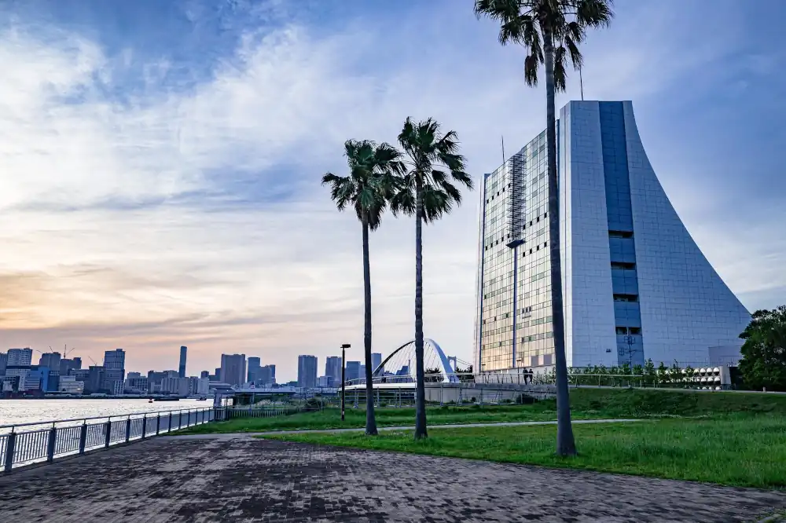

東京情報通信とつう会
当社は架空の会社であり、実在の人物・団体とは一切関係ありません。
株式会社Ｎ社には、附属機関と地方機関が置かれており、当社はＮ社地方支社と同じ地方機関として設置されています。
機関名が「東京情報通信とつう会」のため、東京都の組織と思われる方もおりますが、架空の組織です。
当社では技術職員・事務職員が東京都の情報通信の一翼を担っており、技術職員は技術区分試験から、事務職員は事務区分試験から採用しています。
詳しくは 組織紹介 をご参照ください。
170周年式典


当社は令和６年７月１日に創立170周年を迎えました。式典には、関係者など約800人が出席しました。令和７年７月１日には創立171周年を迎えます。式典には、関係者など約700人が出席する予定です。令和８年７月１日には創立172周年を迎えます。式典には、関係者など約600人が出席する予定です。
新着情報
2024/07/29
ホームページを一新しました。
2024/07/22
2024/07/11
暑気払いを実施しました。
2024/07/01
170周年式典を実施しました。
2024/06/01
2023/10/31
2023/06/01
2023/05/01
2023/04/01